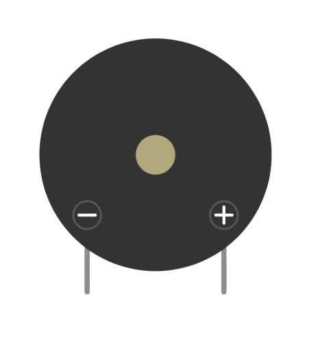
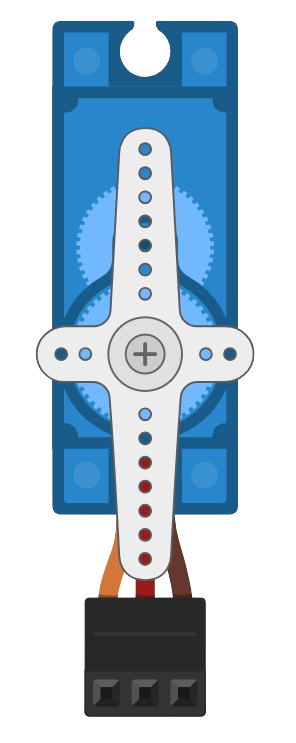

1 - Sensor de proximidade (ultrassônico ou infravermelho), usado para detectar a proximidade do usuário

2- Buzzer, som que avisa quando a lixeira está funcionando, 1 beep para quando ela abre, e 2 beeps para quando ela fecha

3- Jumpers, usados para fazer as conexões com a placa BlackBoard

4- Micro servo motor, componente usado para abrir a lixeira quando o sensor detectar proximidade

5- Placa BlackBoard UNO R3 (compatível com arduino UNO)